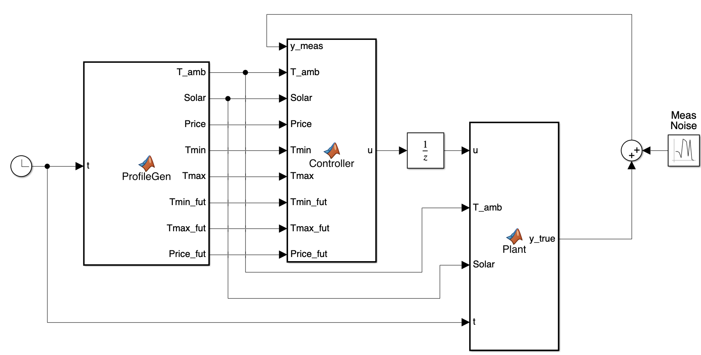

Simulink is widely used for rapid prototyping and hardware-in-the-loop validation of control systems, and Model Predictive Control (MPC) is no exception. Implementing MPC in Simulink without the dedicated MPC Toolbox requires a careful architectural decision: the optimisation solver must be invoked at every simulation time step from within a Simulink block, yet the solver itself — together with the YALMIP modelling layer — relies on dynamic MATLAB features that are incompatible with Simulink’s default code-generation pipeline. This section establishes a general framework that resolves this tension. The approach is first described in fully general terms; Section 1.2 then applies it step by step to a concrete building temperature control system.
The MathWorks MPC Toolbox offers convenient pre-built blocks but abstracts away the optimisation layer entirely. This abstraction becomes a limitation whenever the designer requires any of the following:
Economic (non-regulatory) objectives — for instance, minimising energy cost rather than a quadratic deviation from a setpoint;
Augmented observers — such as Kalman filters that jointly estimate the plant state and an unmeasured disturbance;
Time-varying constraints — comfort bands or operational limits that change according to a schedule;
Custom terminal costs or terminal sets — required for rigorous closed-loop stability guarantees.
Using YALMIP together with quadprog or OSQP provides all of this flexibility whilst keeping solver call-time well within a typical sampling period.
MATLAB Function blocks in Simulink normally compile their contents into C code at simulation start. YALMIP relies on dynamic cell arrays, runtime type inspection, and variable-argument function calls — none of which survive compilation. Attempting to call sdpvar, optimizer, or any YALMIP routine directly inside a compiled block produces an immediate error.
The standard remedy is the coder.extrinsic declaration. Any function declared as extrinsic is not compiled; instead, it executes inside the full MATLAB interpreter at run time. The simulation still advances correctly — the block simply runs in interpreted mode for the declared functions.
Rules for coder.extrinsic
The declaration must appear at the top of the MATLAB Function block body, before any use of the function.
Every output variable must be pre-allocated to a concrete type and size before the extrinsic call, so that Simulink can infer port dimensions at compile time.
All YALMIP-dependent logic should live in a separate .m helper file; the block itself contains only the declaration and a single forwarding call.
The general pattern inside any MATLAB Function block is:
function y = MyBlock(u)
coder.extrinsic('my_helper'); % declare before use
y = zeros(size_of_output); % pre-allocate
y = my_helper(u); % forward to helper
endA Simulink MATLAB Function block does not retain values in its workspace between consecutive invocations — each call begins with a clean local scope. An MPC controller, however, must preserve several quantities across every time step:
the observer state estimate \(\hat{z}_k\);
the last applied input \(u_{k-1}\) (needed for the observer prediction step);
any filtered disturbance estimates;
the compiled YALMIP optimizer objects.
MATLAB’s persistent keyword solves this problem. A persistent variable is initialised once on the first function call and retains its value for the lifetime of the function in memory. Within a Simulink simulation, this means the variable persists across every time step from \(k=1\) to the end of the run.
Persistent Variable Pattern for MPC Helper Functions Declare all cross-step quantities with persistent at the top of the helper .m file, then guard initialisation with an isempty check:
function u = my_mpc_step(y_meas, ...)
persistent opt_obj observer_state u_prev
if isempty(observer_state) % runs on first call only
opt_obj = build_optimizers();
observer_state = x0_guess;
u_prev = 0;
end
% ... rest of the control pipeline ...
endImportant: before starting a new simulation run always execute clear functionname in the MATLAB Command Window. This resets all persistent variables to their initial state; failure to do so causes the controller to inherit the terminal conditions of the previous run.
YALMIP’s optimizer function pre-processes the problem structure — symbolic variable registration, sparsity analysis, and conversion to the solver’s native QP format — and returns a compiled function handle. This pre-processing is the expensive step (typically 10–30 s for moderate-sized problems) and must not be repeated at every simulation time step.
The correct approach is to create a dedicated initialisation function, call it exactly once inside the persistent-variable guard shown above, and store the resulting objects as persistent variables. All subsequent time steps call the compiled objects directly, which typically completes in milliseconds.
function [opt1, opt2] = build_optimizers()
% Called once. Returns compiled optimizer objects.
% -- Define symbolic decision variables -----------------------
x = sdpvar(nx, 1);
u = sdpvar(nu, 1);
p = sdpvar(np, 1); % parametric inputs (e.g. price, bounds)
% -- Formulate constraints and objective ----------------------
con = [ ... ]; % linear/quadratic constraints
obj = ... ; % quadratic cost
% -- Compile with chosen solver -------------------------------
ops = sdpsettings('solver', 'quadprog', 'verbose', 0);
opt1 = optimizer(con, obj, ops, {p}, {u});
% -- Second optimizer (e.g. target calculator) ----------------
% ...
endThe architecture that best reconciles Simulink’s execution model with YALMIP’s requirements separates the design into two layers, as shown in Figure 1.1.
Layer 1 — the Simulink canvas contains only standard Simulink blocks and thin MATLAB Function wrapper blocks. Each wrapper declares one helper function as extrinsic, pre-allocates its outputs, and forwards its inputs. Signal routing, the feedback connection, noise injection, and input saturation are all handled by built-in Simulink blocks.
Layer 2 — the helper .m files contain all computation: observer updates, YALMIP calls, QP solves, and persistent state. Because they execute in the full MATLAB interpreter they impose no restrictions on the code they contain.
coder.extrinsic calls. Persistent variables in the helper files carry state across time steps and store the compiled optimizer objects for the lifetime of the simulation.In any discrete-time closed-loop Simulink model of the form Plant \(\to\) Controller \(\to\) Plant, Simulink detects an algebraic loop: computing the plant output \(y_k\) requires the current input \(u_k\), which itself requires \(y_k\). The standard remedy is to insert a Unit Delay block between the controller output (or the saturation block) and the plant input:
\[\cdots \to \text{Saturation} \;\xrightarrow{\;u_k\;}\; \underbrace{\text{Unit Delay}}_{T_s,\;\mathrm{IC}=0} \;\xrightarrow{\;u_{k-1}\;}\; \text{Plant} \to \cdots\]
This is not an approximation — in a physically realisable digital controller the input computed at step \(k\) cannot reach the actuator until step \(k{+}1\). The observer in the MPC helper file must therefore use \(u_{k-1}\) (stored as a persistent variable) rather than \(u_k\) in its prediction equation, which is achieved automatically by the pattern shown in Section 1.1.3.
YALMIP supports a wide range of QP solvers through a common interface. For typical MPC problems — moderate-horizon quadratic programmes with linear constraints — the following two solvers are recommended.
| Solver | Availability | Notes |
|---|---|---|
quadprog |
Ships with MATLAB Optimisation Toolbox | Reliable, no warm-start across calls; sufficient for \(N \leq 30\) |
| OSQP | Free, open-source; install via osqp-matlab |
Supports warm-starting; recommended for long horizons or fast sampling rates |
Both are specified in YALMIP identically:
sdpsettings(’solver’,’quadprog’,...)
or
sdpsettings(’solver’,’osqp’,...).
Figure 1.2 summarises the complete development workflow. The left column shows the offline design steps that are completed once before the Simulink model is built. The right column shows the runtime sequence that executes automatically during simulation.
.m helper files and the Simulink model. On each new simulation run the persistent variables are cleared manually, after which the runtime sequence (right) executes automatically, compiling YALMIP objects once on the first step and solving the QP at every subsequent step.We revisit the single-zone office heating problem introduced in the previous chapter. The general framework of Section 1.1 is now applied step by step to the three-state physically derived RC model, combining an augmented Kalman filter — which jointly estimates the three thermal states and an unmeasured occupancy disturbance — with a two-layer economic MPC comprising an economic steady-state target calculator and a deviation-form MPC regulator with electricity-price preview. This example exercises every aspect of the general framework: persistent optimiser objects, a multi-output profile generator, an extrinsic plant block, and a feedback loop broken by a Unit Delay.
The discrete-time model of the single-zone building (sampling period \(T_s = 1800\,\mathrm{s}\), i.e. 30 min) is
\[\begin{equation*} x_{k+1} = A x_k + B u_k + E\,T_{\mathrm{amb},k} + B_{\mathrm{sol}}\,\varphi_{\mathrm{sol},k} + B_w\,d_k, \qquad y_k = C x_k + v_k, \end{equation*}\]
where \(x_k = [T_{\mathrm{air},k},\; T_{w,\mathrm{in},k},\; T_{w,\mathrm{out},k}]^\top \in \mathbb{R}^3\) contains indoor air temperature and the two wall-layer temperatures, \(u_k \in [0,\,2000]\,\mathrm{W}\) is heater power, \(T_{\mathrm{amb},k}\) and \(\varphi_{\mathrm{sol},k}\) are the measured outdoor temperature and solar irradiance (known feedforwards), and \(d_k\) (\({}^\circ\)C/step) is the unmeasured occupancy-driven thermal disturbance. The output
\[y_k = 0.56\,T_{\mathrm{air},k} + 0.44\,T_{w,\mathrm{in},k}\]
is the operative temperature (ISO 7726), measured with noise standard deviation \(\sigma_v = 0.1\,{}^\circ\)C.
The pre-computed ZOH-discretised matrices are \[\begin{multline*} A = \begin{bmatrix} 0.8753 & 0.1102 & 0.0004 \\ 0.0275 & 0.9649 & 0.0073 \\ 0.0001 & 0.0049 & 0.9851 \end{bmatrix}, \quad B = \begin{bmatrix}7.91\times10^{-4}\\1.00\times10^{-4}\\0\end{bmatrix},\quad E = \begin{bmatrix}0.01404\\0.00025\\0.00993\end{bmatrix},\\[4pt] B_{\mathrm{sol}} = \begin{bmatrix}9.04\times10^{-6}\\1.43\times10^{-6}\\3.47\times10^{-4}\end{bmatrix}, \quad B_w = \begin{bmatrix}1.7647\\0.0267\\0\end{bmatrix},\quad C = \begin{bmatrix}0.56 & 0.44 & 0\end{bmatrix}. \end{multline*}\]
The control objective is to minimise electricity cost subject to comfort constraints: \[y_{\min,k} \;\leq\; y_k \;\leq\; y_{\max,k}, \qquad 0 \;\leq\; u_k \;\leq\; 2000\,\mathrm{W},\] where the comfort bounds follow a daily occupancy schedule (\([20,\,23]\,{}^\circ\)C during occupied hours 07:00–22:00, \([15,\,26]\,{}^\circ\)C overnight).
Following the general architecture of Section 1.1.5, the implementation consists of four helper .m files and one Simulink model file. Table 1.1 maps each file to the corresponding generic role.
| File | Generic role | Purpose |
|---|---|---|
| build_mpc_optimizers.m | build_optimizers.m |
Kalman gain (DARE), economic target optimizer, MPC regulator optimizer with price preview; called once |
| get_profiles.m | disturbance_profiles.m |
Ambient temperature, solar irradiance, electricity price, current comfort bounds, and \(N\)-step future comfort bound vectors |
| plant_step.m | plant_model.m |
One-step advance of the discrete RC building model; persistent true state x_true and true occupancy disturbance |
| mpc_controller_step.m | mpc_step.m |
Kalman observer, economic target calculation, economic MPC QP solve with price preview; all state persistent |
| EconomicMPC.slx | Simulink model | Wires all wrapper blocks and standard blocks together |
All .m files and EconomicMPC.slx must reside in the same folder, or all .m files must be accessible via addpath.
build_mpc_optimizers.mThis function fulfils the role of the generic build_optimizers.m described in Section 1.1.4. It computes the steady-state Kalman gain via dare and pre-compiles two YALMIP optimizer objects: one for the economic steady-state target and one for the deviation-form MPC regulator with \(N\)-step price preview. The compilation step runs exactly once, since the resulting objects are stored as persistent variables in mpc_controller_step.m.
function [target_calc, mpc_reg, L] = build_mpc_optimizers()
% Builds YALMIP optimizer objects and the Kalman gain.
% Called exactly once via the persistent guard in mpc_controller_step.m.
fprintf('Building YALMIP optimizers -- please wait...\n');
Ts = 1800;
A = [0.8753, 0.1102, 0.0004;
0.0275, 0.9649, 0.0073;
0.0001, 0.0049, 0.9851];
B = [7.91e-4; 1.00e-4; 0 ];
E = [0.01404; 0.00025; 0.00993];
Bsol = [9.04e-6; 1.43e-6; 3.47e-4];
Bw = [1.7647; 0.0267; 0 ];
C = [0.56, 0.44, 0];
nx = 3; nu = 1; u_min = 0; u_max = 2000;
%% -- Augmented Kalman filter (state + occupancy disturbance) ------
% z = [x; d], random-walk disturbance model
A_aug = [A, Bw; zeros(1,nx), 1];
B_aug = [B; 0];
E_aug = [E; 0];
Bsol_aug= [Bsol; 0];
C_aug = [C, 0];
W_kf = diag([1e-3, 1e-3, 1e-3, (0.01)^2]); % sqrt(W_d)=0.01 degC/step
V_kf = 0.1^2;
[P_kf,~,~] = dare(A_aug', C_aug', W_kf, V_kf);
L = P_kf * C_aug' / (C_aug * P_kf * C_aug' + V_kf);
%% -- Economic steady-state target optimizer -----------------------
price_k = sdpvar(1,1); d_hat_k = sdpvar(1,1);
T_amb_k = sdpvar(1,1); phi_k = sdpvar(1,1);
y_min_k = sdpvar(1,1); y_max_k = sdpvar(1,1);
xs = sdpvar(nx,1); us = sdpvar(nu,1); ss_slack = sdpvar(1,1);
ss_cons = [xs == A*xs + B*us + E*T_amb_k + Bsol*phi_k + Bw*d_hat_k, ...
y_min_k - ss_slack <= C*xs <= y_max_k + ss_slack, ...
u_min <= us <= u_max, ss_slack >= 0];
ss_obj = price_k * us + 1e4 * ss_slack^2;
ops_ss = sdpsettings('solver','quadprog','verbose',0);
target_calc = optimizer(ss_cons, ss_obj, ops_ss, ...
{price_k, d_hat_k, T_amb_k, phi_k, y_min_k, y_max_k}, ...
[xs; us]);
%% -- Economic MPC regulator with N-step price preview -------------
% Stage cost: ||x_tilde||_Q^2 + beta*price*u*(Ts/3600) + rho*slack^2
% Penalty hierarchy: rho >> beta*p_max*u_max*(Ts/3600)
% i.e. 1e7 >> 6*0.28*2000*0.5 = 1680
N = 24; Q = diag([5,2,1]); beta = 6; rho = 1e7;
[P_term,~,~] = dare(A, B, Q, 1e-3);
du_v = sdpvar(nu,N,'full'); dx_v = sdpvar(nx,N+1,'full');
slk = sdpvar(1,N,'full');
xh_v = sdpvar(nx,1); xs_v = sdpvar(nx,1); us_v = sdpvar(nu,1);
Ymn = sdpvar(1,N,'full'); Ymx = sdpvar(1,N,'full');
Price_v = sdpvar(1,N,'full');
obj = 0;
con = [dx_v(:,1) == xh_v - xs_v];
for i = 1:N
u_abs = du_v(:,i) + us_v;
x_pred_i = dx_v(:,i+1) + xs_v;
con = [con, ...
dx_v(:,i+1) == A*dx_v(:,i) + B*du_v(:,i), ...
u_min <= u_abs <= u_max, ...
Ymn(i)-slk(i) <= C*x_pred_i <= Ymx(i)+slk(i), slk(i) >= 0];
obj = obj + dx_v(:,i)'*Q*dx_v(:,i) ...
+ beta*Price_v(i)*u_abs*(Ts/3600) ...
+ rho*slk(i)^2;
end
obj = obj + dx_v(:,N+1)' * P_term * dx_v(:,N+1);
ops_mpc = sdpsettings('solver','quadprog','verbose',0);
mpc_reg = optimizer(con, obj, ops_mpc, ...
{xh_v, xs_v, us_v, Ymn, Ymx, Price_v}, du_v(:,1));
fprintf('Optimizers ready.\n');
endHorizon and Tuning Parameters The prediction horizon \(N = 24\) steps corresponds to 12 hours at \(T_s = 30\,\mathrm{min}\), allowing the controller to anticipate the morning and evening price transitions. The state penalty \(Q = \mathrm{diag}(5,2,1)\) weights the air temperature most heavily. The economic weight \(\beta = 6\) and the comfort slack penalty \(\rho = 10^7\) satisfy the hierarchy \(\rho \gg \beta\,p_{\max}\,u_{\max}\,(T_s/3600) = 1680\), guaranteeing that comfort violations are never preferred over heating. The terminal cost \(P_\infty\) is the DARE solution, ensuring asymptotic stability of the unconstrained closed-loop.
get_profiles.mThis function fulfils the role of the generic disturbance_profiles.m. It receives the current simulation time in seconds from the Simulink Clock block and returns all time-varying exogenous signals: ambient temperature, solar irradiance, electricity price, current comfort bounds, and the \(N\)-step future comfort bound and price vectors required by the MPC optimiser.
function [T_amb, Solar, Price, Tmin, Tmax, Tmin_fut, Tmax_fut, Price_fut] = ...
get_profiles(t)
% Input: t in seconds (Simulink Clock output).
% Outputs: scalars for current step + 1x24 vectors for MPC horizon.
N = 24; Ts = 1800; t_h = t / 3600;
% Outdoor temperature: nominally -1 to 11 degC (winter scenario)
T_amb = 5 + 6*sin(2*pi*(t_h - 14)/24) + 0.5*randn;
% Solar irradiance: daytime half-sine, zero at night
Solar = max(0, 600*sin(pi*(mod(t_h,24) - 8)/9));
% Electricity price: peak / off-peak tariff
is_peak = (mod(t_h,24) >= 7) && (mod(t_h,24) < 22);
if is_peak
Price = 0.28; Tmin = 20; Tmax = 23;
else
Price = 0.05; Tmin = 15; Tmax = 26;
end
% N-step future comfort bounds and price sequence for MPC
Tmin_fut = zeros(1,N); Tmax_fut = zeros(1,N);
Price_fut = zeros(1,N);
for i = 1:N
t_fut = t_h + i*(Ts/3600);
if (mod(t_fut,24) >= 7) && (mod(t_fut,24) < 22)
Tmin_fut(i) = 20; Tmax_fut(i) = 23;
Price_fut(i) = 0.28;
else
Tmin_fut(i) = 15; Tmax_fut(i) = 26;
Price_fut(i) = 0.05;
end
end
endplant_step.mThis function fulfils the generic plant_model.m role. The true state \(x_\mathrm{true}\) is stored as a persistent variable. On each call the function returns the current measured operative temperature \(y_\mathrm{true} = C x_\mathrm{true}\) and then advances the state by one step, incorporating the heater input, solar irradiance, ambient temperature, and the true occupancy disturbance (unknown to the controller).
function y_true = plant_step(u, T_amb, Solar, t)
% Run clear plant_step before each new simulation.
% t: current time in seconds (used to compute true occupancy).
persistent x_true
A = [0.8753, 0.1102, 0.0004;
0.0275, 0.9649, 0.0073;
0.0001, 0.0049, 0.9851];
B = [7.91e-4; 1.00e-4; 0 ];
E = [0.01404; 0.00025; 0.00993];
Bsol = [9.04e-6; 1.43e-6; 3.47e-4];
Bw = [1.7647; 0.0267; 0 ];
C = [0.56, 0.44, 0];
if isempty(x_true)
x_true = [19; 17; 10]; % initial temperatures: air, inner wall, outer wall
end
% True occupancy: 300 W internal gains => 0.191 degC/step
t_h = t / 3600;
d_occ = 0.191 * double(mod(t_h,24) >= 8 && mod(t_h,24) < 18);
y_true = C * x_true;
x_true = A*x_true + B*u + E*T_amb + Bsol*Solar + Bw*d_occ;
endmpc_controller_step.mThis is the main control file, fulfilling the role of the generic mpc_step.m. It implements the persistent-variable pattern described in Section 1.1.3: on the first call it invokes build_mpc_optimizers and initialises the augmented Kalman state; on every subsequent call it executes the three-stage pipeline shown in Figure 1.3.
mpc_controller_step.m. The dashed arrow carries the \(N\)-step future comfort bounds and electricity-price sequence directly from the input port to the MPC Regulator, bypassing the observer and target stages. All persistent quantities are retained between calls via MATLAB’s persistent keyword.function u = mpc_controller_step(y_meas, T_amb, Solar, Price, ...
Tmin, Tmax, Tmin_fut, Tmax_fut, Price_fut)
% Full Economic MPC step: observer -> target -> MPC.
% Run clear mpc_controller_step before each new simulation.
persistent target_calc mpc_reg L z_est u_prev
Ts = 1800;
A_aug = [ 0.8753, 0.1102, 0.0004, 1.7647;
0.0275, 0.9649, 0.0073, 0.0267;
0.0001, 0.0049, 0.9851, 0.0000;
0, 0, 0, 1 ];
B_aug = [7.91e-4; 1.00e-4; 0; 0];
E_aug = [0.01404; 0.00025; 0.00993; 0];
Bsol_aug= [9.04e-6; 1.43e-6; 3.47e-4; 0];
C_aug = [0.56, 0.44, 0, 0];
nx = 3; u_min = 0; u_max = 2000;
%% -- First call: initialise (Section 9.1.3 pattern) ---------------
if isempty(z_est)
[target_calc, mpc_reg, L] = build_mpc_optimizers();
z_est = [19; 17; 10; 0]; % [T_air; T_w_in; T_w_out; d_hat]
u_prev = 0;
end
%% -- Stage 1: Kalman observer (predict + correct) -----------------
z_pred = A_aug*z_est + B_aug*u_prev + E_aug*T_amb + Bsol_aug*Solar;
z_est = z_pred + L*(y_meas - C_aug*z_pred);
x_hat = z_est(1:nx);
d_hat = z_est(end);
%% -- Stage 2: Economic steady-state target ------------------------
[ss_sol, flag_ss] = target_calc{Price, d_hat, T_amb, Solar, Tmin, Tmax};
if flag_ss ~= 0
warning('Target calculator failed -- applying fallback.');
x_ss = x_hat; u_ss = u_prev;
else
ss_sol = full(ss_sol);
x_ss = ss_sol(1:nx);
u_ss = ss_sol(nx+1);
end
%% -- Stage 3: Economic MPC regulator (deviation form) -------------
[du, flag_mpc] = mpc_reg{x_hat, x_ss, u_ss, Tmin_fut, Tmax_fut, Price_fut};
if flag_mpc ~= 0
warning('MPC regulator failed -- applying steady-state input.');
du = 0;
else
du = full(du);
end
%% -- Saturate and store -------------------------------------------
u = min(max(u_ss + du, u_min), u_max);
u_prev = u;
endWith all four helper files in place, the Simulink model requires only standard block types and three MATLAB Function wrapper blocks. The complete signal flow is shown in Figure 1.4.
Open the Configuration Parameters dialogue (Ctrl+E) and apply the settings in Table 1.2. Selecting the discrete (no continuous states) solver is essential because all dynamics are managed inside the helper files via persistent variables.
| Parameter | Value | Reason |
|---|---|---|
| Stop time | 172800 |
48 h \(\times\) 3600 s/h |
| Solver type | Fixed-step | Discrete controller |
| Solver | discrete (no continuous states) |
States in persistent vars |
| Fixed-step size | 1800 |
\(T_s = 30\,\mathrm{min}\) |
Table 1.3 lists every block in the model. Each of the three MATLAB Function blocks must contain the corresponding wrapper from Listing [lst:wrapper].
| Label | Library path | Key parameter |
|---|---|---|
| Clock | Sources \(>\) Clock | Decimation: 1 |
| ProfileGen | User-Defined Functions \(>\) MATLAB Function | Wrapper: Listing [lst:wrapper] |
| Plant | User-Defined Functions \(>\) MATLAB Function | Wrapper: Listing [lst:wrapper] |
| AddNoise | Math Operations \(>\) Sum | Signs: ++ |
| MeasNoise | Sources \(>\) Random Number | Mean: 0, Var: 0.01, \(T_s\): 1800 |
| UnitDelay | Discrete \(>\) Unit Delay | \(T_s\): 1800, IC: 0 |
| Controller | User-Defined Functions \(>\) MATLAB Function | Wrapper: Listing [lst:wrapper] |
| Saturation | Discontinuities \(>\) Saturation | Lower: 0, Upper: 2000 |
| ToWorkspace | Sinks \(>\) To Workspace | One block per logged signal |
function [T_amb, Solar, Price, Tmin, Tmax, Tmin_fut, Tmax_fut, Price_fut] = ...
ProfileGen(t)
coder.extrinsic('get_profiles');
T_amb = 0; Solar = 0; Price = 0; Tmin = 0; Tmax = 0;
Tmin_fut = zeros(1,24); Tmax_fut = zeros(1,24);
Price_fut = zeros(1,24);
[T_amb, Solar, Price, Tmin, Tmax, Tmin_fut, Tmax_fut, Price_fut] = ...
get_profiles(t);
end
%% ---- Plant block -----------------------------------------------
function y_true = Plant(u, T_amb, Solar, t)
coder.extrinsic('plant_step');
y_true = 0;
y_true = plant_step(u, T_amb, Solar, t);
end
%% ---- Controller block -----------------------------------------
function u = Controller(y_meas, T_amb, Solar, Price, ...
Tmin, Tmax, Tmin_fut, Tmax_fut, Price_fut)
coder.extrinsic('mpc_controller_step');
u = 0;
u = mpc_controller_step(y_meas, T_amb, Solar, Price, ...
Tmin, Tmax, Tmin_fut, Tmax_fut, Price_fut);
endBefore every simulation run, reset all persistent variables by executing the following in the MATLAB Command Window:
clear plant_step mpc_controller_stepThen press Ctrl+T in Simulink. On the first time step the Command Window displays:
Building YALMIP optimizers -- please wait...
Optimizers ready.The first step takes approximately 10–30 s; all subsequent steps complete in under 50 ms.
Connect To Workspace blocks to \(y_\mathrm{true}\), \(y_\mathrm{meas}\), \(u\), Price, \(\underline{y}\), and \(\bar{y}\), saving each as a MATLAB array. After the simulation use the script below to produce a four-panel result plot matching Figure [fig:singlezone2].
Ts = 1800;
tout = (0:length(log_y)-1) * Ts / 3600; % hours
figure('Color','w');
tiledlayout(4,1,'TileSpacing','compact','Padding','compact');
nexttile;
plot(tout, log_y, 'b', 'LineWidth', 1.5); hold on;
plot(tout, log_ymeas,'.', 'Color',[0.85 0.33 0.10]);
plot(tout, log_tmin, 'k--','LineWidth', 1.2);
plot(tout, log_tmax, 'k--','LineWidth', 1.2);
grid on; ylabel('Temperature ($^\circ$C)');
legend('Operative $y_k$','Measured','$\underline{y}$','$\bar{y}$', ...
'Interpreter','latex','Location','best');
title('Operative temperature vs comfort bounds');
nexttile;
yyaxis left; stairs(tout, log_u, 'LineWidth', 1.5);
ylabel('Heater power (W)');
yyaxis right; stairs(tout, log_price, '--','LineWidth', 1.2);
ylabel('Price (\pounds/kWh)');
grid on; title('Heater power and electricity price');
nexttile;
plot(tout, log_d_true, 'k--','LineWidth', 1.2); hold on;
plot(tout, log_d_est, 'b', 'LineWidth', 1.5);
grid on; ylabel('Disturbance ($^\circ$C/step)');
legend('True occupancy $d_k$','KF estimate $\hat{d}_k$', ...
'Interpreter','latex','Location','best');
title('Occupancy disturbance estimation');
nexttile;
stairs(tout, cumsum(log_cost), 'LineWidth', 1.5);
grid on; xlabel('Time (hours)');
ylabel('Cumulative cost (\pounds)');
title(sprintf('Cumulative heating cost (total: \pounds %.3f)', sum(log_cost)));
set(findall(gcf,'-property','FontSize'),'FontSize',13);
| Symptom | Remedy |
|---|---|
Function not found: get_profiles |
Helper files are not on the MATLAB path. Run addpath(pwd) or place all .m files alongside EconomicMPC.slx. |
Undefined function ’sdpvar’ |
YALMIP is not installed or not on the path. Run yalmiptest before starting Simulink. |
| Temperature starts from wrong value on second run | Persistent variables were not cleared. Run clear plant_step mpc_controller_step before pressing Run. |
| Algebraic loop warning | Unit Delay block (\(T_s=1800\), IC \(=0\)) is missing on the Saturation \(\to\) Plant path. See Section 1.1.6. |
Port dimension mismatch on Tmin_fut or Price_fut |
Pre-allocation lines Tmin_fut = zeros(1,24) and Price_fut = zeros(1,24) must appear before the extrinsic call in the ProfileGen wrapper. |
| Controller uses wrong disturbance level at night | Confirm the augmented model includes the correct \(B_w\) column and that d_hat (not d_filt) is passed to the target calculator; the single-zone example does not apply exponential smoothing. |
| First step takes over 60 s | Normal on low-end hardware; YALMIP is building QP matrices symbolically. Do not interrupt the simulation. |
Simulink MPC Without the MPC Toolbox — Key Steps
Helper files. Place all YALMIP and solver logic in ordinary .m files on the MATLAB path (Layer 2).
Persistent state. Store the observer state, last applied input, filtered disturbance, and compiled optimizer objects as persistent variables.
One-time compilation. Call build_mpc_optimizers on the first step only, guarded by if isempty(...).
Wrapper blocks. Each Simulink MATLAB Function block (Layer 1) declares its helper as coder.extrinsic, pre-allocates outputs, and calls the helper.
Break the algebraic loop. Insert a Unit Delay (\(T_s = 1800\), IC \(= 0\)) between Saturation and Plant.
Reset before each run. Execute clear plant_step mpc_controller_step before pressing Run.
Persistent variables in Simulink MATLAB Function blocks. In the single-zone building example, the function mpc_controller_step declares several persistent variables (e.g. the observer state \(\hat x\), the last applied input \(u_{k-1}\), and the compiled optimizer object).
Explain why ordinary local variables would fail to preserve state across successive Simulink time steps.
What would happen if the compiled optimizer object were not stored as a persistent variable? Discuss the implications for both correctness and computational cost.
Describe the role of the if isempty(...) guard that protects the one-time initialisation of persistent variables. Why is this pattern preferred over, for example, using a separate Simulink InitFcn callback?
The role of coder.extrinsic. Simulink MATLAB Function blocks are processed by MATLAB Coder, which requires statically typed, code-generation–compatible functions.
Explain why YALMIP functions (such as sdpvar, optimize, and optimizer) cannot be compiled by MATLAB Coder.
Describe what the coder.extrinsic directive does and how it allows YALMIP-based helper functions to be called from within a Simulink MATLAB Function block.
The chapter recommends pre-allocating every output variable with zeros before the call to the extrinsic helper. Explain why this pre-allocation step is necessary and what error would occur without it.
Adding a rate-of-change constraint to the building controller. The MPC formulation in Section 1.2 enforces box constraints \(0 \le u_k \le 2000\) W on the heater input but does not limit how quickly the input may change between consecutive steps. Suppose you wish to add the constraint \(|\Delta u_k| = |u_k - u_{k-1}| \le \Delta u_{\max}\) with \(\Delta u_{\max} = 500\) W.
Describe which file(s) in the two-layer architecture you would need to modify and what YALMIP constraints you would add inside the prediction-horizon loop.
Explain why the persistent variable u_prev (the last applied input) must be passed as a parameter to the optimizer object so that the rate constraint can reference the transition from \(u_{k-1}\) to the first predicted input \(u_0\).
Discuss qualitatively how adding a tight rate-of-change limit would affect the closed-loop temperature response during morning warm-up, when a large step in heating power would otherwise be applied.
The algebraic-loop problem and the Unit Delay solution. Section 1.1 explains that a direct connection from the MPC controller output to the plant input, and from the plant output back to the controller, creates an algebraic loop.
Draw a simplified signal-flow diagram showing the loop and explain, in your own words, why Simulink cannot determine a consistent set of signals at a single time step when the loop is present.
Explain how inserting a Unit Delay block (with sample time \(T_s = 1800\) s and initial condition \(u_0 = 0\)) breaks the algebraic loop. What is the physical interpretation of applying the control action one sample period later?
In practice, MPC already computes the control move for the current time step. Argue whether the one-step delay introduced by the Unit Delay block materially degrades closed-loop performance for a slowly varying building thermal system with a 30-minute sample time.
Designing a Simulink MPC architecture for a DC motor. Consider a DC motor whose angular velocity \(\omega\) is governed by the simplified continuous-time transfer function \[G(s) = \frac{\omega(s)}{V(s)} = \frac{K}{\tau s + 1},\] where \(V\) is the armature voltage, \(K = 10\) rad s\(^{-1}\) V\(^{-1}\), and \(\tau = 0.1\) s. The input is subject to \(0 \le V \le 24\) V, and the objective is to track a reference speed \(\omega_{\mathrm{ref}}(t)\).
Discretise the plant with a suitable sample time (justify your choice) and write down the resulting state-space matrices \(A_d\), \(B_d\), \(C_d\), \(D_d\).
Sketch a Simulink block diagram following the two-layer architecture from this chapter. Label each block (Reference Generator, MPC Controller, DC Motor Plant, Scope / To Workspace) and indicate where a Unit Delay block should be placed.
List the persistent variables you would declare inside the mpc_controller_step function for this system. Identify any differences from the building-heating case study (e.g. is a disturbance observer still needed?).
Briefly discuss how the much shorter time constant of the DC motor (\(\tau = 0.1\) s) compared with the building (\(\tau \approx 10^4\) s) affects the choice of prediction horizon and the computational burden of solving the QP at each step.